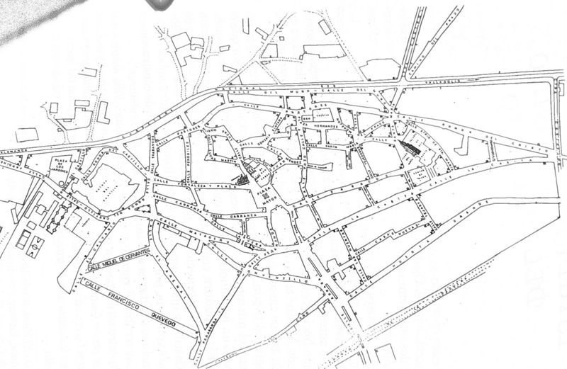

Las calles de Alaejos
De dónde vienen los nombres de las calles del pueblo: vecinos del siglo XVI, oficios, caminos, la cerca que ya no existe y los motes populares que conviven con los nombres oficiales.
En esta página (4 apartados · 7 min de lectura)
Antonio Lucas Varela dedicó el capítulo III de Cerramícalo (2002) al «estudio onomástico del callejero». Empieza por el nombre del pueblo y sigue, calle por calle, con el origen de cada nombre y el que le da la gente. Esta página resume ese estudio. Los cambios de nombre del siglo XX, de 1936 a 1993, se cuentan en El siglo XX.


Quién puso nombre a Alaejos
Sobre el nombre del pueblo, Falafeios en los documentos más antiguos, y sus posibles significados, véase Orígenes y Edad Media. Lucas Varela defiende allí que es un nombre de árboles, de sauces o saúcos, puesto por repobladores gallegos. En Cerramícalo va algo más lejos y propone quiénes repoblaron la aldea:
- Gallegos, que habrían bajado por la Vía de la Plata tras la conquista de Toledo en 1085 y serían la base de la repoblación. Recuerda, con José Ojeda, que la emigración gallega hacia Castilla seguía en el siglo XVI.
- Mozárabes, por las palabras de origen árabe que conserva el habla del pueblo: josa, alcacer, chacho, chiches, galbana, maimón, arrecájel, almocafre o algarroba, y parajes como Barragán o la Atalaya. A los moros los recordarían, con desprecio, Saltalperro, el Morisquillo y Perromoro.
- Judíos, de los que quedaría la palabra cocho. La judería está documentada, pero no se sabe dónde estaba.
- Leoneses, a los que atribuye los nombres y apellidos de origen godo tan frecuentes en el siglo XVI: Hernando, Rodrigo, Alonso, González, Álvarez, Hernández, Fernández o Rodríguez.
Él mismo advierte que «no es mi intención polemizar con esta teoría» y que solo los estudios de la repoblación comarca por comarca podrán confirmarla. Los libros de bautismo de Santa María, que podrían ayudar, empiezan en 1552, demasiado tarde (Lucas Varela, Cerramícalo, 2002, págs. 138-143).
Calles del siglo XVI
Según José Ojeda Nieto, los nombres de las calles son del siglo XVI o posteriores, salvo los de Fortaleza y Plaza y la Ronda, que serían anteriores. Varias calles llevan el nombre de vecinos de aquel siglo: Carranza, Juan Méndez, Lucas Martín, los Perogiles o los Zabacos. En el Catastro de 1751 muchas tenían ya el nombre actual (véase El siglo XVIII).
Calle por calle
Las calles y plazas del casco urbano hacia 2001, en el orden alfabético del libro (Lucas Varela, Cerramícalo, 2002, págs. 144-148). Entre comillas, el nombre que les da la gente.
- Arenal, calle del
- Urbanizada sobre el antiguo Arenal, llamado así por la tierra arenosa. Era el camino de los alcaceres, la zona hacia donde crecía el pueblo.
- Arrabal, calle del
- Sobre el antiguo arrabal, el barrio que quedaba fuera de la población, cuyo límite era la calle de la Ronda, hoy de la Casita. La palabra viene del árabe ar-rabad, «barrio de las afueras».
- Atrio de Santa María, calle
- La iglesia y su cercado, con el carneruelo y el camposanto de pobres.
- Calvario, calle del
- De urbanización reciente. Recuerda el camino del vía crucis, cuando se rezaba por los alrededores del pueblo. Quedan señales de algunas estaciones en las tapias de las huertas del Arenal.
- Caño, callejón del
- Camino largo y estrecho entre las tapias de las huertas, en dirección al Caño.
- Carranza, calle de
- Por Francisco Carranza, vecino del siglo XVI. El apellido viene de carlanca o carranca, el collar de púas que protegía a los mastines de los lobos.
- Casas Nuevas, calle de las
- Popularmente «Calle sin Dios». Cambió de nombre al renovarse todas sus casas.
- Casita, calle de la
- El camino más directo a la ermita de la Casita. Su nombre más antiguo era calle de la Ronda, porque cerraba el pueblo por el sur.
- Constitución, plaza de la
- Recuerda la Constitución de 1978. Es la Plaza Mayor, centro de la vida pública.
- Conventillo, calle del
- Recordaría el convento de franciscanos descalzos del siglo XVI (véase Siglos XVI y XVII), aunque la calle está muy lejos de donde estuvo. En el coro alto de Santa María queda, muy deteriorada, una imagen de San Francisco con los estigmas.
- Correos, calle de
- Nombre oficial de la «Calleja Cerrada», pequeña y sin salida.
- Fortaleza y Plaza, calle
- El eje principal de la villa, que unía el castillo con la plaza. Popularmente «calle de la Cárcel», porque los calabozos estaban en la Casa Consistorial, donde la calle desemboca en la plaza.
- Francisco de Quevedo, calle de
- En la zona nueva, recuerda al escritor que cantó el vino de Alaejos.
- Gonzala Santana, calle de
- Por Gonzala Santana, «la Pollita de Oro», benefactora de principios del siglo XX que pagó los estudios a muchos niños de Salamanca y de Alaejos, los «gonzaleros». Lucas la llama salmantina y añade que su familia procedía de Alaejos; dónde nació está en estudio en su página.
- Hernández Morejón, plaza de
- Por el médico militar Antonio Hernández Morejón, hijo del pueblo. Es el Lavajo del Lugar.
- Huerta Grande, calle de la
- Por la huerta más señalada de la zona, que tradicionalmente se llamaba Saltalperro.
- Huertas, calle de las
- El camino de los huertos, al sur del pueblo.
- Jardines, calle y plaza de los
- La plaza está ajardinada sobre el solar del lavajo del Castillo, ya desecado, y la calle sale de ella.
- José Zorrilla, calle de
- Por el poeta vallisoletano.
- Juan Méndez, calle de
- Por un vecino del siglo XVI.
- Lucas Martín, calle de
- Por un clérigo beneficiado de San Pedro, también del siglo XVI.
- Matadero, calle del
- Donde estuvo el matadero municipal, que se trasladó por salud pública a la carretera de Castronuño.
- Miguel de Cervantes, calle de
- Por el escritor, que también nombró el vino de Alaejos.
- Muro, calle del
- Por la cerca que rodeaba el pueblo hasta el siglo XVI.
- Pastores, calle de los
- Por los pastores y sus antiguas hermandades (véase Oficios, agua y vida diaria).
- Peñaranda, calle
- La salida hacia Peñaranda de Bracamonte.
- Perogiles, calle de los
- Por la familia de los Perogiles, del siglo XVI.
- Pozo, calle del
- El camino al Pozo Nuevo, en el Lavajo del Lugar. Con el Pozo Viejo del Arrabal, eran los dos únicos pozos públicos.
- Prado, calle del
- Hacia el prado de Carrealvar.
- Quinto Centenario, calle del
- Recuerda el V centenario de la aparición de la Virgen de la Casita, celebrado en 1990.
- Ramón y Cajal, calle de
- Por Santiago Ramón y Cajal, premio Nobel de Medicina en 1906.
- Ronda del Castillo, calle de la
- Cerraba el castillo y el pueblo por el oeste-noroeste.
- Ronda del Cristo, calle de la
- Cerraba el pueblo por el noreste. Antes era el arrabal de Santa María.
- San Pedro, callejón de
- Popularmente «el Carneruelo». Rodea por detrás la iglesia y su cercado, con el carneruelo y el camposanto de pobres.
- Santa María, calle y plaza de
- La calle lleva a la iglesia; la plaza es la plazuela o atrio de Santa María.
- Teatro, calle del
- Por la entrada al teatro.
- Tejares, calle de los
- Debería recordar un lugar donde se hacían tejas o ladrillos, pero no hay indicios de que allí los hubiera. Lucas sugiere que fueran adoberías, porque la calle está en las afueras y mira al sur, buen sitio para secar adobes.
- Tejedores, calle de los
- Por los tejedores de lana y su hermandad.
- Trabancos, calle
- Por el río y por el poblado del mismo nombre, desaparecido, cuyo término pasó a Nava del Rey. Es un nombre prerromano de origen poco claro; Eufemio Lorenzo lo relaciona con el latín trabes, «viga».
- Vera, calle de la
- «La calle de la orilla»: la que iba a la vera de la cerca del pueblo. Se prolonga por la antigua Ronda.
- Zabacos, calle de los
- Por la familia de Rodrigo Zabaco, vecino del siglo XVI. Lucas no encontró la etimología del apellido.
Para seguir leyendo
- Antonio Lucas Varela, Cerramícalo (Alaejos, Fundación Familia Hernández Puertas, 2002), capítulo III, «Estudio onomástico del callejero».
- José Ojeda Nieto, Alaejos. Un pueblo de Castilla la Vieja en la España del XVI (Valladolid, 1989), capítulos III y IV.
- En la biblioteca de los programas: José Luis Pérez Muñoz, «Cambios en el callejero» (2009).
Cómo citar esta página
Amigos de Alaejos, «Las calles de Alaejos», https://www.amigosdealaejos.org/historia-del-pueblo/las-calles-de-alaejos/ (revisión del 21/11/2026).